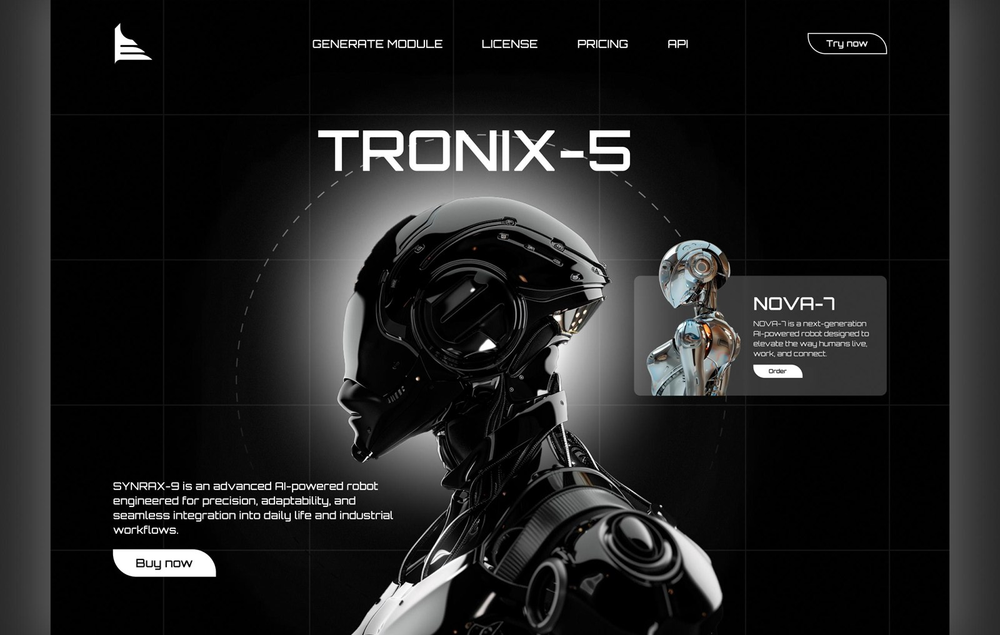
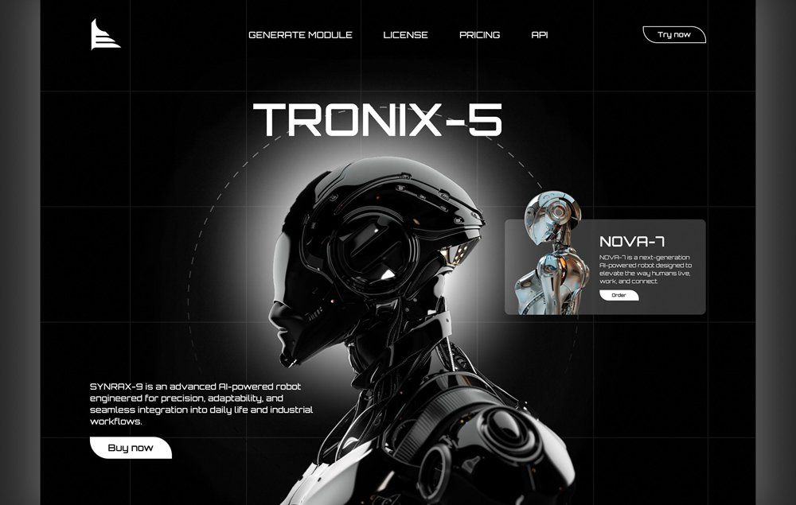
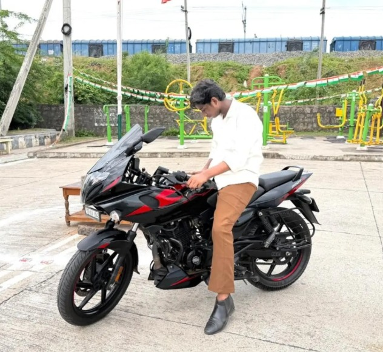

Language & knowledge barriers
Research, services and opportunity are locked behind languages. Japanese technical knowledge rarely reaches Indian students — and Indian context rarely reaches Japanese labs.
YUME AI / 夢 / RESEARCH PORTFOLIO
An aspiring AI, Machine Learning and Robotics researcher from India, working towards studying and conducting research in Japan.
One Vision. Four Languages. One Intelligent Future.

28.61° N · 77.21° E → 35.68° N · 139.69° E
Same face. Same story. A different angle — as the work begins to take shape.

MOVE YOUR POINTER — the card responds in depth
I am Sai Charan, a student from India at the beginning of a long research road — building the foundations in mathematics, programming and language that serious AI and robotics work demands.
My direction is clear: embodied, multilingual artificial intelligence — machines that do not only compute, but listen, understand context, and behave safely around people. Japan, where robotics and human-centred engineering meet, is where I want to study and contribute.
This site is a blueprint, not a trophy cabinet. Every research direction on it is a plan I am working toward — not a finished result I am claiming.
Education, ambition, interests and the mission that connects them.
Senior secondary schooling in India — building the academic base for engineering and research.
Pursuing the next stage of schooling while preparing for higher studies and competitive applications.
Targeting a Japanese pathway in engineering and applied AI — details subject to eligibility and selection.
To become an AI and Robotics engineer and contribute to advanced technological research — work that connects intelligent software to the physical world, and connects India and Japan through shared science.
India and Japan differ in language, scale and culture — yet face overlapping human challenges where intelligent machines could genuinely help.
Research, services and opportunity are locked behind languages. Japanese technical knowledge rarely reaches Indian students — and Indian context rarely reaches Japanese labs.
Japan's population is shrinking and ageing; care work is strained. Assistive and companion robotics must be safe, patient and genuinely understood by the people using them.
Both nations live with earthquakes, floods and cyclones. Response robots need to operate in chaos, communicate across languages, and support responders without getting in the way.
Small farms and ageing farmers on both sides need precision tools that are affordable, repairable and usable by people who are not engineers.
Japan's craftsmanship and India's young workforce are complementary. The gap is not talent — it is language, training and accessible human–machine interfaces.
A patient tutor in every language, available at any hour, is still a dream for most students. Multilingual AI tutoring could change the scale of what one teacher reaches.
夢 — dream. A research direction for machines that understand people, not just commands.
“A robot that understands a human must first understand their language, their context, and their limits.”
YUME AI is my proposed research platform: a multilingual, embodied AI system built around four pillars — Listen, Understand, Act and Care. Each pillar pairs a technical problem with a human one.
Robust speech recognition and language identification across Japanese, English, Hindi and Telugu — including noisy rooms, code-switching and low-resource speech.
Grounding language in cultural context and real-world state, so intent is inferred rather than guessed — and decisions can be explained to a person.
Translating understanding into safe physical behaviour — manipulation, mobility and assistive tasks on robotic platforms, simulated before deployed.
Human–robot interaction as a first-class engineering discipline: trust calibration, dignity, accessibility and the ethics of machines in private life.
A patient multilingual study companion that explains concepts in the student's strongest language and adapts pace to the learner.
Education accessAn assistive home robot concept focused on conversation, reminders and safe monitoring for elderly users — with privacy at the centre.
Ageing societyReal-time speech and document translation tuned for engineering and research vocabulary between Japanese and Indian languages.
Knowledge barriersSix subsystems, one loop. Drag to rotate the system, and select any node to read what it is meant to do.
NOTE The architecture is a design proposal for future study, not an implemented system.
A staged plan — deliberately honest about what is done, what is next, and what is only intended.
Mathematics for machine learning, Python and data structures, first ML courses — alongside foundational Japanese and a disciplined study routine.
NLP and computer vision projects, an introduction to ROS and mechatronics, and a first small prototype of one YUME AI pillar.
Complete school education, prepare language and entrance requirements, and apply through the appropriate KOSEN / MEXT route as eligibility allows.
Undergraduate study in Japan, joining a laboratory working on multilingual NLP, embodied AI or human–robot interaction — and contributing real work.
NOTE Dates are intentions, not commitments. Scholarship routes depend on eligibility, examinations and selection.
Japan is where robotics leaves the laboratory and enters daily life — in care homes, factories, farms and disaster response.
For someone who wants to build machines that understand humans, that is the most honest classroom in the world. Japan's research culture also rewards patience, precision and long-term thinking — qualities I want to learn.
The route I am aiming at is the MEXT scholarship and the College of Technology (KOSEN) pathway, subject to eligibility and selection. This page does not claim admission, selection or any award.
Foundational study first — reading, listening and technical vocabulary for research life.

I am Sai Charan — a student from India and the person behind YUME AI. Everything here is my own direction of study, written honestly.
This is not a company announcement. YUME AI is a research vision I am building in public: a set of engineering questions about multilingual, embodied intelligence — and a promise to do the work before making the claim.
OPEN TO conversations about AI, robotics and studying in Japan.
Open to conversations about AI, robotics, study in Japan, and collaboration with people who care about building technology with a human centre.
India 🇮🇳 × Japan 🇯🇵 — よろしくお願いします